품질경영산업기사 (2016-05-08 기출문제)
1과목: 실험계획법
1. 2요인 실험(이원배치 실험)에 관한 설명으로 틀린 것은?
- 반복이 있는 경우, 두 요인(인자)의 교호작용을 검증해 볼 수 있다.
- 각 요인(인자)별로 완전 랜덤화 (complete reandomization)를 시행한다.
- 반복이 있는 2요인 시험(이원배치 시험)은 재현성과 관리상태를 검토할 수 있다.
- 2개의 요인(인자)에서 각각의 수준이 l, m일 때, 반복이 없는 경우 ℓ×m회의 실험을 행하게 된다.
(정답률: 61%)

2. 모수요인(모수인자)인 온도의 3수준을 실험에서 고려하고자 한다. 온도의 각 수준은 실험자의 경험에 따라, 100, 120, 140℃로 고려하였다. i번째 수준에서 j번째 반복 실험 결과인 xij에 대해 다음과 같은 모형을 설정하였다. 모형의 가정으로 맞는 것은?
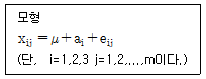
- a1+a2=-a3
- ai≥0
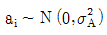
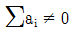
(정답률: 37%)
3. 반응시간 A, 반응온도 B, 촉매종류 C 의 3가지요인(인자)을 택해 다음과 같은 라틴방격을 사용하여 실험배치를 행하였을 경우 오차항의 자유도(ve)는 얼마인가?
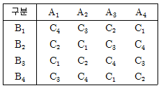
- 2
- 3
- 4
- 6
(정답률: 61%)
4. 반복수가 일정하지 않은 모수모형의 1요인 실험(일원배치 실험)에 관한 설명으로 틀린 것은?
- 총 제곱합의 자유도는 총 실험수에서 1을 뺀 값이다.
- 반복이 달라도 실험은 완전 랜덤하게 행하여야 한다.
- 반복이 달라도 요인(인자)의 자유도는 요인수(인자수)-1로 변함이 없다.
- 반복수가 일정한 실험을 행하다가 일부실험을 실패한 경우도 해당된다.
(정답률: 67%)
5. 난괴법 실험에서 요인(인자)A는 모수요인(모수인자)으로 3수준, 요인(인자) B는 변량요인(변량인자)으로 5수준일 때 B 의 산포를 구하기 위한
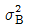
의 추정값은?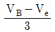
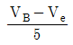
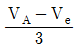
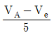
(정답률: 72%)
6. A는 모수요인(모수인자), B는 블록요인(블록인자)인 난괴법에서 인자 B의 제곱합 는 약 얼마인가?
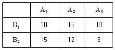
- 5.667
- 7.667
- 10.667
- 14.667
(정답률: 69%)
7. 실험계획법에 사용하는 오차항의 가정 중 등분산성에 대한 설명으로 옳은 것은?
- 오차(eij)의 분포는 정규분포를 따른다.
- 오차((eij)의 기댓값은 0이고 편의는 없다.
- 임의의 (eij와 (eij(i=≠i, j≠j)는 서로 독립이다.
- 오차((eij)의 분산은
 으로 어떤 i, j에 대해서도 일정하다.
으로 어떤 i, j에 대해서도 일정하다.
(정답률: 52%)
8. 반복 있는 2요인 실험(이원배치 실험)에 대한 설명으로 틀린 것은?
- 교호작용을 분리해서 구해 볼 수 있다.
- 수준수가 적어도 반복수의 크기를 조절하여 검출력을 높일 수 있다.
- 반복한 데이터로부터 실험의 재현성과 괄니상태를 검토할 수 있다.
- 요인(인자)의 효과에 대한 검출력은 좋아지나, 실험오차를 단독으로는 구할 수 없다.
(정답률: 68%)
9. x는 예측변수, y는 반응변수이며, x의 제곱합 S(xx)=90, y의 제곱합 S(yy)=400, 회귀에 의하여 설명되는 제곱합 SR=360이었다. 이 때 결정계수(r2)는 얼마인가?
- 0.225
- 0.675
- 0.889
- 0.900
(정답률: 55%)
10. 어떤 화학반응 실험에서 농도를 4수준으로 반복수가 일정하지 않은 실험을 하여 다음의 표와 같이 데이터를 얻었다. 분산분석결과 Vs=167.253이다. μ(A1)과 μ(A4)의 평균치차를 α=0.⑤로 검정하고자 한다. 평균치 차가 얼마 이상일 때 평균치 차가 있다고 할 수 있는가? (단, t0.975(15)=2.131, t0.97(15)=1.753이다.)
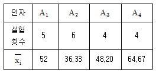
- 16.556
- 18.487
- 19.487
- 20.127
(정답률: 69%)
11. 모수모형 2요인 실험(이원배치 실험)의 분산분석표에서 교호작용을 무시하였을 경우 요인 B의 분산비(F0)는 약 얼마인가?
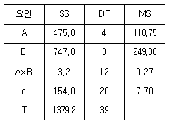
- 0.04
- 15.42
- 32.34
- 50.69
(정답률: 42%)
12. 다음 표는 라틴방격법에 의한 실험결과를 분산분석한 결과의 일부이다. 검정결과로 맞는 것은? (단, F0.95(2,2)=19.0, F0.99(2,2)=99.0이다.)
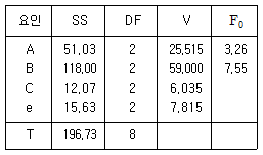
- A, B, C 모두 유의하다.
- A, B, C 모두 유의하지 않다.
- A 와 B는 유의하고, C는 유의하지 않다.
- B는 유의하고, A와 C는 유의하지 않다.
(정답률: 48%)
13. 4대의 기계에 제품을 각 100개씩 만들어, 적합품이면 0, 부적합품이면 1의 값을 주기로 하였다. 그 결과가 다음 표와 같을 때 오차항의 제곱합(Se)은 얼마인가?
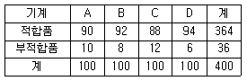
- 0.20
- 31.67
- 32.56
- 32.76
(정답률: 59%)
14. 1요인 실험(일원배치 실험)에서 총제곱합 ST=1.01이고, A요인의 순제곱합 SA'=0.40 일 때 기여율 ρA는 약 얼마인가?
- 39.6%
- 42.2%
- 44.4%
- 46.2%
(정답률: 65%)
15. 직교배열표를 사용한 실험의 장점이 아닌 것은?
- 분산분석표를 작성하지 않고 분석한다.
- 실험 데이터로부터 요인의 제곱합 계산이 용이하다.
- 실험의 크기를 확대시키지 않고도 실험에 많은 요인(인자)을 배치시킬 수 있다.
- 실험계획법에 대한 지식이 없어도 일부실시법, 분할법, 교락법 등의 배치가 쉽다.
(정답률: 63%)
16. 강력 접착제의 응집력을 높이기 위해서 4요인 A,B,C,D가 중요한 작용을 한다는 것을 알고, 각각 2수준씩을 선택하여 Ls(27)직교배열표를 이용한 실험의 결과로 다음 표와 같은 결과를 얻었다. 총제곱합(ST)은 얼마인가? (단, 제곱합
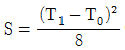
이다.)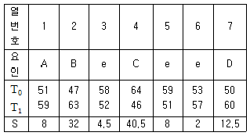
- 14.5
- 107.5
- 127.5
- 1620
(정답률: 61%)
17. 여러 명의 작업자 중 랜덤하게 5명을 선정해 어떤 화학약품을 동일 장치로 3회 반복하게 하여 분석시켰을 때, 분산분석표가 다음과 같다면
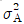
는 약 얼마인가?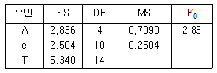
- 0.0459
- 0.1147
- 0.1529
- 0.1773
(정답률: 46%)
18. 어떤 공장에서 제품의 강도에 영향을 미칠 것으로 생각되는 온도(A) 3수준과 촉매량(B) 4수준으로 하여 반복이 없는 2요인 실험(이원배치 실험)을 실시하고 분산분석한 결과 오차항의 제곱합으로 108을 얻었다. 요인(인자) A의 각 수준에서 모평균의 95%신뢰구간은?
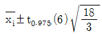
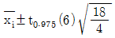
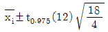
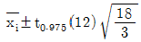
(정답률: 62%)
19. 실험계획법의 기본원리가 아닌 것은?
- 반복의 원리
- 랜덤화의 원리
- 불변성의 원리
- 블록화의 원리
(정답률: 68%)
20. 요인(인자) A는 3수준, 요인(인자) B는 3수준인 반복 없는 2요인 실험(이원배치실험)에서 결측치가 2개 발생하였을 때 오차항의 자유도(vs)는 얼마인가?
- 2
- 3
- 4
- 8
(정답률: 70%)
2과목: 통계적품질관리
21. 계수 및 계량 규준형 1회 샘플링 검사(KS Q 0001:2013)에서 “계수 규준형 1회 샘플링검사”에 대한 설명으로 맞는 것은?
- LQ중심의 품질보증을 한다.
- 검사의 엄격도 조정이 필요하다.
- 계량치 측정 데이터에 적용하는 방법이다.
- 합격판정기준을 샘플의 크기(n)와 합격판정개수(c)로 표현하는 방식이다.
(정답률: 71%)
22. 그림은 N 과 n이 일정하고, 합격판정개수의 변화에 따른 OC곡선의 변화를 나타낸 것이다. 각 OC곡선과 샘플링 검사 방식을 맞게 연결시킨 것은?
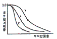
- ㄱ : A, ㄴ : B, ㄷ : C
- ㄱ : B, ㄴ : C, ㄷ : A
- ㄱ : C, ㄴ : B, ㄷ : A
- ㄱ : C, ㄴ : A, ㄷ : B
(정답률: 54%)
23.
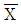
관리도에서 의 변동
의 변동 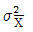
는 군간변동(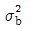
)과 군내변동(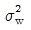
)으로 구성된다. 개개 데이터의 산포(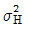
)를 히스토그램에서 구할 때 필요한 식은? (단, n은 부분군의 크기를 의미한다.)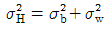
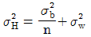
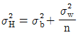
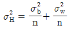
(정답률: 62%)
24. 어떤 회사에서 제조하는 제품 15개를 추출하여 중량에 대한 표본 분산을 계산한 결과 10g이 나왔다. 위험률 α=5%로 제품중량에 대한 분산이 8g을 넘을 것인지 검정을 하였을 때의 결과로 맞는 것은? (단, 제품 중량은 정규분포를 따른다고 가정하며,
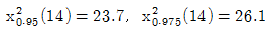
이다.)- H0를 기각한다.
- H1을 채택한다.
- H0를 채택한다.
- 자료의 부족으로 알 수 없다.
(정답률: 48%)
25. A공정에서 제조된 로트로부터 150개의 샘플을 취해서 검사해 본 결과 3개의 부적합품이 나왔다. 모부적합품률의 신뢰구간(confidence interval)은 약 얼마인가? (단, 신뢰율 95%이다.)
- 0~0.0384
- 0~0.0394
- 0~0.0424
- 0~0.0474
(정답률: 49%)
26. 부적합품률이 0.⑤인 모집단에서 4개의 표본을 샘플링(sampling)할 때 부적합품이 하나도 없을 확률은 약 얼마인가? (단, 푸아송분포를 이용하여 구하시오.)
- 0.72
- 0.82
- 0.86
- 0.93
(정답률: 42%)
27. 검사의 목적에 해당하지 않는 것은?
- 공정능력을 측정하기 위하여
- 검사원의 정확도를 평가하기 위하여
- 적합품과 부적합품을 구별하기 위하여
- 제품의 판매개척을 용이하게 하기 위하여
(정답률: 56%)
28. p 관리도에 대한 설명으로 틀린 것은?
- 부분군의 크기(n)가 다를 경우 관리한계에 요철이 생긴다.
- 부분군의 크기(n)가 커질수록 관리한계의 폭은 좁아진다.
- 관리한계(control limit)는 부분군의 크기(n)에 영향을 받지 않는다.
- p관리도는 부분군의 크기(n)가 다른 경우에도 사용할 수 있다.
(정답률: 58%)
29. 합리적인 군으로 나눌 수 없는 경우 k=25, ∑X=389.59, ∑Rm=12.40일 때 X관리도의 관리상한(UCL)과 관리하한(LCL)은 약 얼마인가?
- UCL=16.958, LCL14.209
- UCL=19.833, LCL13.297
- UCL=25.432, LCL=18.354
- UCL=32.235, LCL=20.321
(정답률: 52%)
30. 검정 및 추정에 관련된 설명 중 틀린 것은?
- 유의수준의 값이 작을수록 귀무가설의 기각 가능성은 커진다.
- 검정을 통하여 입증하고 싶은 현상을 대립 가설로 설정한다.
- 검정 결과 귀무가설이 채택되는 경우 신뢰구간의 추정은 의미가 없다.
- 검정에서 대립가설을 한쪽가설로 설정하는 경우, 귀무가설이 기각되면, 추정은 단측 신뢰구간(on-sided confidence interval)즉 아래쪽 신뢰한계 혹은 위쪽 신뢰한계만 구하는 한쪽 추정방식이 행하여 진다.
(정답률: 37%)
31. 계수형 샘플링검사 절차-제1부 : 로트별 합격품질한계(AQL)지표형 샘플링검사 방안(KS Q ISO 2859-1 : 2014)에 따른 계수치 샘플링 검사 중 수월한 검사에서 보통 검사로 복귀되는 경우, 3가지 조건 중 하나만 해당되어 전환된다. 3가지 조건에 해당되지 않는 것은?
- 1로트라도 불합격
- 전환점수가 30점이 넘었을 때
- 생산이 불규칙하게 되었거나 정체
- 기타 조건에서 보통 검사로 복귀해야 할 필요가 발생
(정답률: 66%)
32. 상관계수의 검정에서 r표를 활용하는 경우, r0＞r1-α/2(v)또는 r0＜-r1-α/2(v)일 때의 내용 중 맞는 것은? (단, v=n-2이다.)
- 상관관계가 있다고 판정한다.
- 상관관계가 없다고 판정한다.
- 이 상태로는 판정하기 어렵다.
- 상관관계가 있기도 하고 없기도 하다고 판정한다.
(정답률: 53%)
33. 계수 및 계량 규준형 1회 샘플링 검사(KS Q 0001:2013)의 계량 규전형 1회 샘플링 방식(표준편차 기지)에서 로트의 로트의 평균치를 보증할 때 특성치 높은편이 좋은 경우의 하한 합격 판정치(
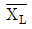
)을 구하는 식으로 맞는 것은?- G0σ
- m0-G0σ
- m1σ
- m0+G0σ
(정답률: 79%)
34. X 공장에서 생산하는 탁구공의 지름은 대략 평균 1.30인치, 표준편차 0.04인치인 정규분포를 따르는 것으로 알려져 있다. 탁구공의 지름이 1.28인치에서 1.30인치 사이일 확률은? (단, u~N(0, 12)일 때, P(0≤u≤0.5)0.1915, P(0≤u≤1.0)=0.3413이다.)
- 0.1498
- 0.1915
- 0.3413
- 0.5328
(정답률: 46%)
35. 스프링 제조공장에서 인장강도의 평균에 관한 검정을 하고자 한다. 과거의 관리기록이 없다면, 이에 적절한 검정 통계량은? (단, 표본의 수는 적다라고 가정하며, 재곱합
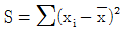
이다.)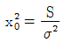
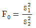
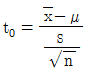
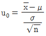
(정답률: 52%)
36. 전선 1000m를 하나의 검사단위로 할 때, 이 전선의 검사단위당 편균부적합수
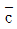
를 추정하여 보니 5.4이었다. 이 공정의 부적합수 관리를 위한 c 관리도의 3σ관리한계(control limit)로 맞는 것은? (단, 관리상한은 UCL, 관리하한은 LCL이다.)- UCL=5.66, LCL=5.32
- UCL=9.95, LCL=0.85
- UCL=12.37, LCL=0.50
- UCL=12.37, LCL=고려하지 않는다.
(정답률: 74%)
37. 부분군의 크기(n)가 4인 부분군의 수(k) 25개를 조사한 결과
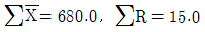
을 얻었다. 이때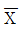
관리도의 관리상한(UCL)은 약 얼마인가? (단, n=4 일 때 d2=2.⑤9이다.)- 27.40
- 27.64
- 28.17
- 28.68
(정답률: 45%)
38. 자료의 중심적 경향을 나타내는 척도가 아닌 것은?
- 중위수
- 산술평균
- 최빈수
- 표준편차
(정답률: 49%)
39. 관리도에 타점하는 통계량(statistic)은 정규분포를 한다고 가정한다. 공정(모집단)이 정규분포를 이룰 때에는 표본의 분포는 언제나 정규분포를 이루지만, 공정의 분포가 정규분포가 아니더라도 표본의 크기가 클수록 정규분포에 접근한다는 이론은?
- 중심극한정리
- 체비쉐브의 법칙
- 체계적 추출법
- 크기비례 추출법
(정답률: 79%)
40. 상자 속에 12개의 제품이 들어있는데 그중에서 4개가 부적합품이다. 상자에서 임의로 1개씩 두 번 추출할 때 2개가 모두 합격품일 확률을 구하면? (단, 한 번 꺼낸 것은 되돌려 넣지 않는다.)
- 1/3
- 5/9
- 15/24
- 14/33
(정답률: 59%)
3과목: 생산시스템
41. 라인밸런스 효율(Eb)를 구하는 공식은? (단, n : 작업자 수, tmax:neck time, ∑ti : 공정시간의 합계)
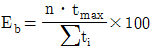
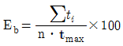
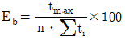
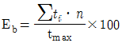
(정답률: 58%)
42. 일정계획에 따라 작업순서를 정하여 명령 또는 지시하는 것으로 실제의 생산활동을 집행하는 역할을 하는 것은 무엇인가?
- 공수계획
- 여력계획
- 라인편성
- 작업배정
(정답률: 72%)
43. 내경법에서 여유율을 산출하는 공식으로 맞는 것은?
- 정미시간 ×(1+여유율)
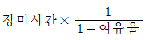
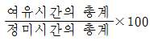
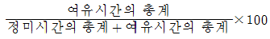
(정답률: 68%)
44. 다음 자료를 이용하여 긴급률법에 의한 작업순서로 바르게 나열한 것은?
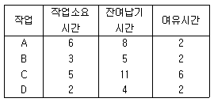
- A-B-D-C
- A-C-B-D
- C-A-B-D
- C-D-B-A
(정답률: 62%)
45. 보전비용이 적게 들도록 재료를 개선하거나, 보다 용이한 부품 교체가 가능하도록 설비의 체질을 개선해서 수명연장, 열화방지 등의 효과를 높이는 보전 활동은?
- 개량보전
- 자주보전
- 예방보전
- 사후보전
(정답률: 60%)
46. 자동차 조립공정의 소요시간이 낙관치(a)=4, 정상치(m)=6, 비관치(b)=8일 때 기대시간값(te)과, 분산(σ2)을 각각 구하면 얼마인가?
- te=4, σ2=0.11
- te=4, σ20.44
- te=6, σ20.11
- te=6, σ20.44
(정답률: 48%)
47. 생산형태 중 생산량과 기간에 따른 분류에 해당되지 않는 것은?
- 대량생산
- 로트생산
- 무인생산
- 개별생산
(정답률: 70%)
48. 자재구입 시 가치분석을 이용할 때 가치분석의 단계 중 맞는 것은?
- 기능의 정의 → 기능의 평가 → 기능의 작성
- 기능의 정의 → 기능의 작성 → 기능의 평가
- 기능의 정의 → 기능의 평가 → 대체안의 작성
- 기능의 정의 → 대체안의 작성 → 기능의 평가
(정답률: 70%)
49. JIT시스템의 특징에 관한 설명으로 틀린 것은?
- 준비∙교체시간을 최소화한다.
- 레이아웃을 U라인으로 편성한다.
- 간판(kanban)에 의해 생산시스템이 운영된다.
- 관리목표는 낭비의 제거보다 계획 및 통제 중심이다.
(정답률: 68%)
50. 전문가를 한자리에 모으지 않고, 일련의 미래사항에 대한 의견을 질문서에 각자 밝히도록 하여 전체의견을 평균치와 사분위값으로 나타내는 수요예측방법은?
- 시장조사
- 판매원 추정법
- 델파이법
- 경영자 판단법
(정답률: 75%)
51. 다중활동분석표에서 복수작업자분석표(Multi-man chart)는 어떤 명칭으로도 불리우는가?
- Flow process chart
- Gang process chart
- Assembly process chart
- Operation process chart
(정답률: 67%)
52. WS법이 stop watch법 보다 유리한 점이 아닌 것은?
- 시간 및 비용이 절감된다.
- 작업 사이클타임이 길 때 유리하다.
- 작업을 보다 세밀히 측정할 수 있다.
- 비반복작업의 표준시간 산출이 가능하다.
(정답률: 47%)
53. MRP(Material Requirement Planning)는 자재의 어떤 부분을 관리하기 위한 것인가?
- 자재의 종속수요
- 자재의 독립수요
- 자재의 초과수요
- 자재의 이동수요
(정답률: 67%)
54. ABC분석에 의거하여 일반적으로 발주형식을 취할 때 정기발주 형식이 적합한 품목은?
- A급 품목
- B급 품목
- C급 품목
- ABC분류와 정기발주 형식은 관련 없다.
(정답률: 65%)
55. 작업활동을 시간적 측면에서 도표에 의해 관리하는 방법으로 일명 바차트라고도 하고, 계획과 실제의 시간적인 관계를 요약하여 나타내는 일정분석 도표는?
- 간트 차트
- 사이모 차트
- 사이클 그래프
- 크로노 사이클 그래프
(정답률: 68%)
56. 화학반응이나 설계도면, 제작도면에 의해 원단위를 산정하는 방법은?
- 실적치에 의한 방법
- 이론치에 의한 방법
- 기준치에 의한 방법
- 시험분석치에 의한 방법
(정답률: 43%)
57. 생산형태의 분류 중 바르게 짝지어진 것은?
- 주문생산-소품종다량생산-연속생산
- 예측생산-다품종소량생산-단속생산
- 주문생산-다품종소량생산-단속생산
- 예측생산-소품종다량생산-단속생산
(정답률: 70%)
58. 일반적인 TPM 소집단 활동에 대한 설명으로 틀린 것은?
- 중복 소집단 활동으로 편성된다.
- 자주보전 스텝활동 중심으로 진행된다.
- 리더는 현장 또는 조직의 책임자가 된다.
- 종업원의 자발적인 의사에 따라 자주적으로 분임조를 편성한다.
(정답률: 57%)
59. 서블릭(therblig)에 관한 설명으로 틀린 것은?
- 시간관측 및 동작분석에 많은 숙련을 요한다.
- 비반복작업으로 소수작업자가 종사하는 작업에 상당히 유리하다.
- 서블릭기호를 이용한 양수 동작분석도표를 시모챠트(simo chart)라 한다.
- 길브레스가 연구한 것으로 그의 이름 Gilbreth를 거꾸로 하여 Therblig 이라 했다.
(정답률: 50%)
60. 공정분석표의 종류에 속하지 않는 것은?
- 제품공정분석표
- PTS공정분석표
- 사무공정분석표
- 작업공정분석표
(정답률: 61%)
4과목: 품질경영
61. 목적하는 모집단의 참값과 측정 데이터와의 차를 무엇이라 하는가?
- 편차
- 오차
- 보정
- 치우침
(정답률: 75%)
62. 품질경영 교육방법으로 실시하는 교육 내용에 따른 분류가 아닌 것은?
- 품질경영사외 교육
- 품질경영이념 교육
- 품질경영제도 교육
- 통계적 관리기법 교육
(정답률: 71%)
63. 게하니(Gehani)교수가 구상한 품질가치사슬에서 TQM의 전략목표인 고객만족품질을 얻는 데 융화되어야 할 3가지 품질로 제시된 사항이 아인 것은?
- 제품품질
- 경영종합품질
- 부품품질
- 전략종합품질
(정답률: 56%)
64. 기업이 품질경영시스템 – 요구사항(KS Q ISO 9001:2015)을 도입할 때 주의사항으로 틀린 것은?
- 인증취득은 끝이 아니라 시작이다.
- 조직의 하부단계부터 단계적으로 교육하다.
- 규격의 요구사항을 조직의 절차로 구성한다.
- 품질방침의 수립이 무엇보다 중시되어야 한다.
(정답률: 83%)
65. 제품이나 서비스의 품질을 개선하고 유지∙관리에 소요되는 비용과 그럼에도 불구하고 발생되는 실패비용을 포함하여 품질코스트라 한다. 품질코스트의 종류 중 관리가 가능한 비용으로 독립변수에 해당되는 코스트는?
- 예방코스트와 평가코스트
- 에방코스트와 내부실패코스트
- 평가코스트와 외부실패코스트
- 내부실패코스트와 외부실패코스트
(정답률: 71%)
66. 표와 같이 조립품의 구멍과 축의 치수가 주어졌을 때 0.0065가 의미하는 것은?
- 최소틈새
- 최대틈새
- 평균틈새
- 최대죔새
(정답률: 89%)
67. 생산단계에서 설계품질에 적합하도록 제조품질을 확보하기 위한 품질관리 활동에 해당되지 않는 것은?
- 검사
- 공정관리
- 신뢰성시험
- 공정개선
(정답률: 60%)
68. 품질경영시스템인증과 제품인증의 차이점은?
- 제품심사
- 제3자 심사
- 사후관리 실시
- 품질경영시스템 심사
(정답률: 52%)
69. 제조업자가 합리적인 설명∙지시∙경고 또는 그밖의 표시를 하였더라면 해당 제조물에 의하여 발생할 수 있는 피해나 위험을 줄이거나 피할 수 있었음에도 이를 하지 아니한 경우의 결함은?
- 제조상의 결함
- 설계상의 결함
- 판매상의 결함
- 표시상의 결함
(정답률: 77%)
70. 기업경영의 합리화 방법인 “3S”가 의미하는 것은 무엇인가?
- 표준화, 전문화, 단순화
- 표준화, 전문화, 분업화
- 표준화, 체계화, 단순화
- 표준화, 단순화, 체계화
(정답률: 84%)
71. 표준의 서식과 작성방법(KS A 0001:2015)에서 그 앞에 있는 수치를 포함시키는 뜻을 가진 용어는?
- 초과
- 이상
- 미만
- 보다 큰
(정답률: 89%)
72. 어떤 품질특성의 규격이 12.0±2.0으로 주어져 있다. 평균이 11.5, 표준편차가 0.5라고 할 때 공정능력지수(CP)는 약 얼마인가?
- 0.67
- 1.09
- 1.33
- 1.67
(정답률: 62%)
73. 현장개선을 위한 그룹토의법으로 사용하는 브레인스토밍의 원칙이 아닌 것은?
- 되도록 많은 의견을 세로 제시하도록 한다.
- 자유로운 의견이 나오도록 분위기를 조성한다.
- 타인의 의견을 이용하여 새로운 의견을 제시한다.
- 타인의 의견에 대해 비평을 통하여 의견의 질을 높인다.
(정답률: 87%)
74. 품질경영시스템 – 기본사항과 용어(KS Q ISO 9000:2015)에서 ‘조직의 품질경영시스템에 대한 시방서’를 뜻하는 용어는?
- 기록
- 품질매뉴얼
- 품질계획서
- 프로젝트 관리 계획서
(정답률: 73%)
75. 어떤 문제로 삼는 결과와 원인이 어떻게 관계하고 있으며 어떤 영향을 주고 있는가를 한눈에 파악하기 위해 작성하는 그림은?
- 층별
- 체크시트
- 산점도
- 특성요인도
(정답률: 64%)
76. 신 QC 7가지 수법이 아닌 것은?
- 산점도
- 친화도법
- PDPC법
- 계통도법
(정답률: 76%)
77. 품질선구자들이 정의한 품질에 대한 설명으로 틀린 것은?
- J.M Juran : 용도에 대한 적합성
- A.V Feigenbaum : 고객의 기대에 부응하는 특성
- Taguchi : 제품이 출하된 후에 사회에서 그로 인해 발생하는 손실
- H.D Seghezzi : 대상의 고유 특성의 집합이 요구사항을 충족시키는 정도
(정답률: 68%)
78. 한국산업표준(KS)의 국면에 따른 분류에 해당되지 g않는 것은?
- 제품규격
- 안전규격
- 방법규격
- 전달규격
(정답률: 52%)
79. 규정 공차가 규격상∙하한으로 정해졌을 경우 규격상한(U)밖으로 나타난 부적합품률은 0.13% 이고 규격하한(L)밖으로 나타난 부적합품률이 0.18%였다면 부적합품률은 총 몇 ppm인가?
- 31ppm
- 310ppm
- 3100ppm
- 31000ppm
(정답률: 71%)
80. 조직에서 사내 표준이 갖추어야 할 조건으로 틀린 것은?
- 사내 표준은 문서 또는 정보화되어 성문화된 자료로 존재하여야 한다.
- 자료는 조직원 누구나 볼 수 있고 활용될 수 있도록 배치 또는 네트워크화해 두어야 한다.
- 회사의 경영자 또는 경영간부가 솔선하여 사내 표준의 유지와 실시를 촉진시켜야 한다.
- 사내 표준은 앞으로 실시 가능성이 있는 미래의 사항을 기준으로 하여 기술하여야 한다.
(정답률: 65%)